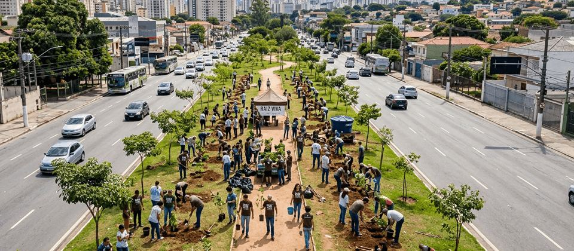

Plantio comunitário
Mutirões mensais reúnem moradores, escolas e empresas parceiras. A escolha das ruas segue o mapa de temperatura da cidade.
Reflorestamento urbano e educação ambiental na zona leste de São Paulo

O Instituto Raiz Viva é uma organização da sociedade civil sem fins lucrativos fundada em 2014. Plantamos árvores em ruas, praças e escolas públicas e formamos moradores para cuidar delas depois do plantio.
Devolver cobertura vegetal aos bairros que menos a têm, tratando a árvore como infraestrutura pública: ela reduz a temperatura da rua, retém água de chuva e melhora a saúde de quem vive por perto.
Mutirões mensais reúnem moradores, escolas e empresas parceiras. A escolha das ruas segue o mapa de temperatura da cidade.
Oficinas gratuitas sobre poda, rega e identificação de espécies nativas, abertas a qualquer morador da região.
Produção própria de mudas com estudantes da rede pública, que acompanham a semente até o plantio na rua.
Av. Regente Feijó, 1295 — Jardim Anália Franco
São Paulo — SP, CEP 03342-000
Telefone: (11) 2654-0188
E-mail: contato@raizviva.org.br
Atendimento de segunda a sexta, das às .